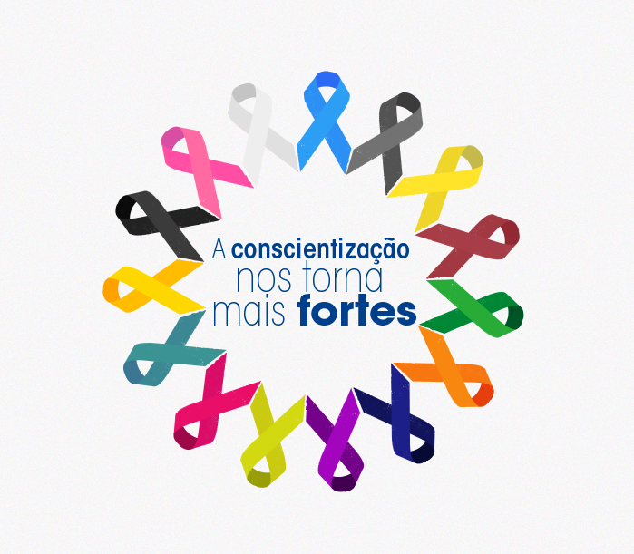

Página Inicial
Campanhas
ONGs
Leis
Sobre
|
O que são as campanhas de conscientização?
As campanhas de conscientização são iniciativas voltadas para a prevenção de doenças e o estímulo
a hábitos saudáveis, elas educam e mobilizam a sociedade para
tratar sobre temas que precisam de
atenção. Elas acontecem durante todo o ano, utilizam cores, eventos e mídia para mobilizar o engajamento

Exemplos:
- Janeiro Branco: Incentivando reflexões sobre bem-estar emocional
- Fevereiro Laranja: Conscientiza sobre a leucemia e destaca a importância do diagnóstico
- Março Lilás: Foca na prevenção do câncer de colo de útero
- Abril Verde: Tem como foco a saúde e a segurança no trabalho
- Maio Amarelo: Procura abordar a segurança no trânsito
- Junho Vermelho: Voltada à doação de sangue
- Julho Amarelo: Conscientiza sobre a prevenção das hepatites virais
- Agosto Lilás: Combate a violência contra a mulher
- Setembro Amarelo: Voltado para a prevenção do suicídio e a promoção da saúde mental
- Outubro Rosa: Promove a conscientização sobre o câncer de mama
- Novembro Azul: Conscientiza sobre a prevenção do câncer de próstata
- Dezembro Vermelho: Promove a conscientização sobre o HIV/AIDS
|